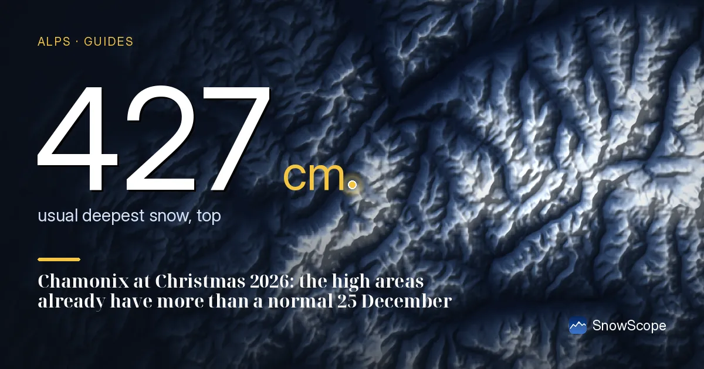
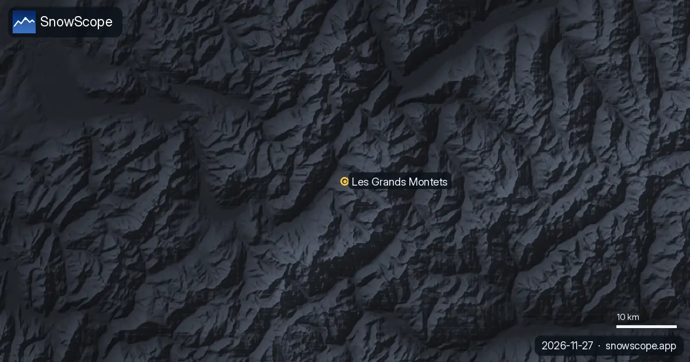

Chamonix at Christmas 2026: the high areas already have more than a normal 25 December
Chamonix looks set for a snowy Christmas on the mountains: the Grands Montets have 80 cm on their upper slopes today and 75 cm at 2,001 m, more than twice the usual 33 cm for late November. A usual 25 December brings 83 cm at that height. The valley floor, far below, is the part that cannot be promised.
See the live snow forecast for Les Grands Montets in the SnowScope appSnow depth, powder alerts and the 3D map, free.

Snow depth in Chamonix today
Grands Montets (Argentière): 80 cm on the upper slopes, 17 cm in the last three days and 121 cm in seven. Brévent-Flégère, on the sunny side of the valley: 70 cm up top. Both areas gained most of their snow in the storms of the last ten days.
The next days are dry and cold, with barely any new snow until December. Expect good pistes, wind-packed ridges and an off-piste snowpack that needs time and caution after so much fresh snow.
Christmas odds from 46 winters
At 2,001 m on the Grands Montets, the usual depth on 25 December is 83 cm; one Christmas in four has less than 56 cm, one in four more than 112 cm. A 50 cm base by New Year was reached in 91% of winters, and by 15 December in 63%.
At Brévent-Flégère, measured at 1,766 m, a usual Christmas has 74 cm, and the base was above 50 cm by New Year in 85% of winters. This year both areas are already above their usual mid-December depth, which removes most of the downside.
The valley is a different story
Chamonix town lies low for a great ski resort, and its streets turn white and green again several times in a typical December. A warm spell with rain on the valley floor can happen even in a good year, while snow keeps falling on the upper lifts. That is why the classic Chamonix picture, snow in town on Christmas morning, cannot be guaranteed a month ahead.
For skiing it matters little: the lifts take you up to the snow in minutes, and the runs back down to the valley are the only ones that depend on the weather of the week.
Where to ski over the holidays
Grands Montets is the high, steep, snow-sure choice: its lifts reach 2,768 m, and its north-facing slopes keep cold snow. Brévent-Flégère has the sunshine and the view of Mont Blanc; Les Houches, lower and tree-lined, is the best day in bad weather. Le Tour and Balme, at the head of the valley, are the gentlest for mixed groups.
Follow the numbers every day on the Grands Montets snow page and the Brévent-Flégère snow page.
Quick answers
Is there enough snow to ski in early December? Yes, on the high areas: the Grands Montets have more today than a normal 8 December, which is 46 cm at 2,001 m.
Will the runs to the valley be open? Usually only once the December storms have reached low down, or where snowmaking covers them. Plan to download by lift on the first visits.
How does the Brévent side compare? It is lower and sunnier: its usual Christmas depth of 74 cm at 1,766 m sits below the Grands Montets, but this season it starts deep as well.
Plan and book
Christmas week in Chamonix is busy but less crowded on the slopes than the big purpose-built resorts, because many visitors come for the town. Book lifts and lessons early, and keep one flexible day for the Vallée Blanche or a guided off-piste day if the snowpack settles.
The deepest month is usually March, when the snowpack at 2,001 m reaches about 165 cm; Christmas is the start of the real season, not its peak.
Tips for skiers
- Stay near Argentière for the Grands Montets, in Chamonix centre for the bus links to every area.
- Ski the Grands Montets early on clear days; the light and the snow are best before midday on the north side.
- Never ride the off-piste without a guide after a big early-season storm; the snowpack is fresh and deep.
- Compare other Christmas destinations on our Christmas skiing page and the Alps snow hub.
About these numbers
Snow numbers: SnowScope's snow map and forecast for today, and our record of 46 past winters at each resort (an estimate for the area, not the resort's own report).
Official avalanche bulletins: Météo-France – Bulletin d'estimation du risque d'avalanche
Cite this report
For research, teaching or the press: the numbers and charts are free to reuse under CC BY 4.0 with this citation.
SnowScope (2026), Chamonix at Christmas 2026: the high areas already have more than a normal 25 December, https://snowscope.app/blog/en/2026/11/chamonix-christmas-2026-snow-odds-grands-montets-brevent-valley-floor.html, accessed 2026-11-27
SnowScope (Atlas Labs). (2026, November 27). Chamonix at Christmas 2026: the high areas already have more than a normal 25 December. SnowScope snow reports. https://snowscope.app/blog/en/2026/11/chamonix-christmas-2026-snow-odds-grands-montets-brevent-valley-floor.html
BibTeX
@misc{snowscope2026chamonixchristmas2026sno,
author = {{SnowScope (Atlas Labs)}},
title = {Chamonix at Christmas 2026: the high areas already have more than a normal 25 December},
year = {2026},
month = nov,
howpublished = {\url{https://snowscope.app/blog/en/2026/11/chamonix-christmas-2026-snow-odds-grands-montets-brevent-valley-floor.html}},
note = {Published 2026-11-27 20:42 UTC; accessed 2026-11-27}
}· CC BY 4.0 · Methods, data and tools →
Les Grands Montets: snow and temperature by height, this winter vs last (tools) →
Follow Les Grands Montets
Free: a message when fresh snow is coming, and the forecast every morning.
More snow reports

79 cm new snow forecast for Les Grands Montets from 16–18 November, mostly above 2000 m elevation, based on forecast from 15 November.

Alpe d'Huez got 106 cm of fresh snow in 72 hours by 23 November. More powder coming, but watch for rain mid-week.

A slope map of Les Grands Montets and seven other ski areas shows how much of the ground is steeper than 30°, 35° and 40°, and why that line matters for avalanches.